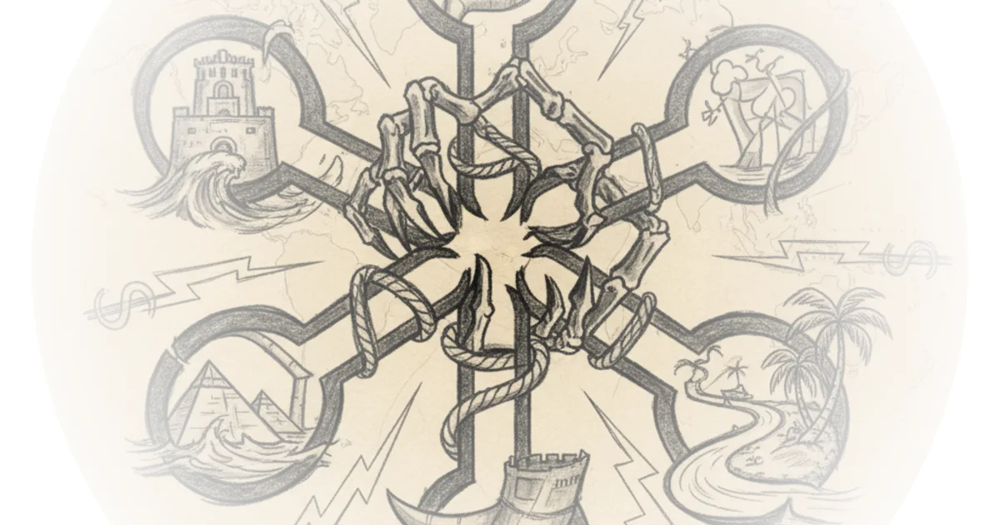

The Dollar as Dreadnought
Edward Fishman's Chokepoints arrives at a moment when the metaphor practically writes itself. Admiral John Fisher once identified five narrow waterways that gave the Royal Navy command of global trade. Today, the chokepoints that matter are not straits or canals but financial clearinghouses, semiconductor design software, and the SWIFT messaging network. The author of this analysis, drawing heavily on Fishman's insider account, makes a compelling case that American economic power now operates on the same principle Fisher articulated over a century ago: you do not need to dominate every ocean if you control the passages through which everything must flow.
The argument is elegantly constructed. Because nearly 90 percent of all foreign exchange transactions involve the US dollar, and because even trades between two non-American parties momentarily "touch" the US clearing system, Washington enjoys a surveillance and enforcement capability that no military deployment could replicate. As the piece frames it:

Even transactions between two entirely non-American entities still for a fraction of a second touch the US financial system. That fleeting contact creates legal jurisdiction for the US government.
That fleeting contact is the entire ball game. It transforms the dollar from a medium of exchange into a mechanism of control, giving the US Treasury the ability to freeze assets, block settlements, and starve adversaries of capital with what amounts to a keystroke.
Secondary Sanctions and the Instex Fiasco
The most striking illustration of this power is the Instex episode. After Washington withdrew from the Iran nuclear deal in 2018, the European Union attempted to preserve its commercial relationships with Tehran by creating a payment mechanism that would bypass the dollar entirely. The result was a spectacular failure:
Over 4 years of operation, Instax processed exactly one transaction, the purchase of medicines, which was already exempt from US sanctions. In 2023, Instax was shut down.
European banks, faced with a choice between Iranian contracts and access to the US financial system, did not hesitate. Forty billion euros in contracts evaporated. The lesson is stark: secondary sanctions work not because they punish violators directly, but because the cost of losing dollar access dwarfs any profit available from sanctions-busting trade. Washington does not need to enforce compliance. The threat alone is sufficient.
Critics of this approach, however, would point out that what looks like strength in the short term may be corrosive in the long term. Every time Washington weaponizes dollar access, it gives the rest of the world one more reason to build alternatives. The Instex failure did not end the conversation; it redirected it toward Chinese payment rails, central bank digital currencies, and bilateral settlement agreements that bypass the dollar altogether.
The Semiconductor Chokepoint
The analysis is at its most incisive when it shifts from finance to technology. The semiconductor supply chain presents an even more concentrated chokepoint than the dollar. While ASML builds the lithography machines and TSMC fabricates the chips, two American firms, Cadence and Synopsys, hold a near-monopoly on the electronic design automation software without which no advanced chip can be designed. The Foreign Direct Product Rule allows Washington to extend jurisdiction over any product made anywhere in the world if American technology was involved at any stage of its creation.
Under FDPR, any product manufactured anywhere in the world falls under US control if its production involves even a single element of American technology or software.
The acceleration of FDPR deployment is remarkable. Applied to a single company in 2020, it was extended to entire national economies by 2022. This is not targeted sanctions policy; it is industrial containment. Whether one views it as prudent strategic competition or reckless overreach depends largely on one's assessment of the Chinese technology threat, but there is no disputing the audacity of the instrument.
The Limits of Economic Coercion
Where the analysis becomes most valuable is in its frank acknowledgment that these weapons are not omnipotent. Iran was supposed to be the proof of concept for maximum pressure. Instead, it became the proof of concept for sanctions evasion. Tehran restructured its entire export economy around Chinese "teapot refineries" in Shandong province, small independent operations with no overseas assets and no exposure to the US financial system. Payments flow in yuan, through barter, or through informal networks. The result: Iranian oil exports hit record levels despite being theoretically shut out of the global market.
Russia's shadow fleet tells the same story from the maritime insurance angle. The G7 price cap exploited the fact that a small cluster of London-based firms insures over 90 percent of the global tanker fleet. In theory, this was an elegant chokepoint. In practice, Moscow assembled hundreds of aging tankers operating outside Western insurance markets entirely, with transponders off and flags of convenience. The price cap raised costs but did not cap prices.
Russia continues to sell its oil at market prices far above the G7 ceiling, demonstrating that control over a financial choke point loses its power when an adversary is determined to build parallel infrastructure.
This is the central tension the piece identifies but does not fully resolve. Every deployment of economic weapons accelerates the construction of alternatives. The sanctions coalition creates its own counter-coalition. Iran, Russia, and China, three countries with very different interests, are now building interlocking financial and logistical systems precisely because American pressure has made cooperation between them rational in a way it was not before 2018.
What the Analysis Misses
There are important counterarguments that deserve more weight than the piece gives them. First, the alternatives being constructed are genuinely inferior. China's CIPS handles a fraction of SWIFT's volume. The digital yuan has not achieved meaningful international adoption. Russia's SPFS is a domestic workaround, not a global competitor. The dollar's dominance rests not on inertia alone but on deep, liquid capital markets, rule of law (however imperfect), and a central bank with decades of institutional credibility. These are not easy to replicate.
Second, the framing of American sanctions as purely offensive overlooks the defensive rationale. When Russian foreign exchange reserves were frozen in 2022, the action was taken in response to a full-scale invasion of a sovereign European state. The FDPR expansion to China targets technologies with direct military applications, including AI chips that could accelerate weapons development. Describing these measures as "weaponization" without weighing them against the threats they address tilts the analysis toward a conclusion that may not be warranted.
Third, the piece underestimates the degree to which European allies, however uncomfortable, remain aligned with Washington on the core questions. The grumbling is real, but the alternatives are worse. No European government seriously contemplates aligning its financial system with Beijing's.
Bottom Line
The analysis offers a sharp and well-structured account of how the United States has converted its position at the center of global financial and technological networks into instruments of coercion. The Fisher metaphor is apt: chokepoints multiply the power of whoever controls them. But the piece is at its best when it acknowledges the paradox at the heart of this strategy. The more aggressively Washington uses these tools, the faster its adversaries work to render them obsolete. The dollar's dominance is measured in decades, not quarters, but the erosion has begun, and it is being driven in no small part by the very policies designed to preserve American primacy. Whether that erosion reaches a tipping point depends on whether China can build financial infrastructure that the rest of the world trusts as much as it trusts, however grudgingly, the system centered on the United States. That remains a very open question.